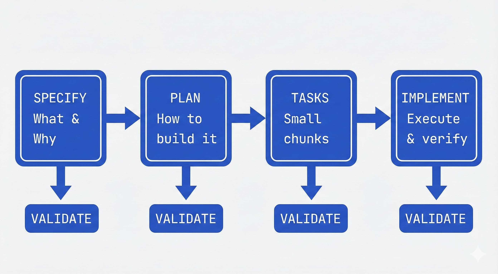
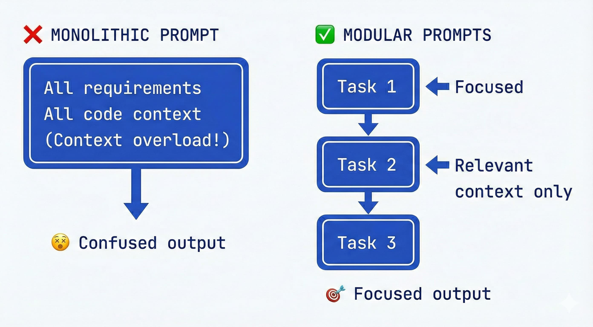
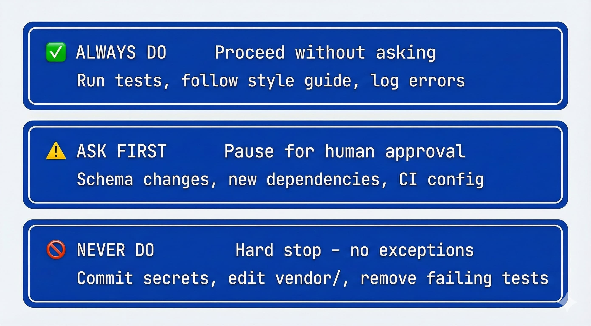
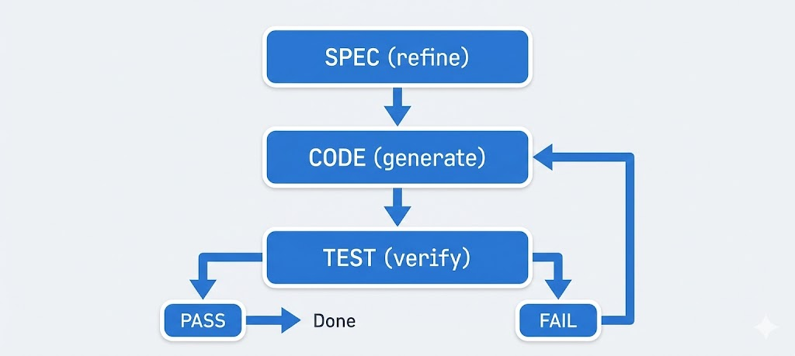

How to write a good spec for AI agents
Addy Osmani · · Original
TL;DR: Aim for a clear spec covering just enough nuance (this may include structure, style, testing, boundaries) to guide the AI without overwhelming it. Break large tasks into smaller ones vs. keeping everything in one large prompt. Plan first in read-only mode, then execute and iterate continuously.
"I've heard a lot about writing good specs for AI agents, but haven't found a solid framework yet. I could write a spec that rivals an RFC, but at some point the context is too large and the model breaks down."
Many developers share this frustration. Simply throwing a massive spec at an AI agent doesn't work — context window limits and the model's "attention budget" get in the way. The key is to write smart specs: documents that guide the agent clearly, stay within practical context sizes, and evolve with the project. This guide distills best practices from my use of coding agents including Claude Code and Gemini CLI into a framework for spec-writing that keeps your AI agents focused and productive.
We'll cover five principles for great AI agent specs, each starting with a bolded takeaway.
1. Start with a high-level vision and let the AI draft the details
Kick off your project with a concise high-level spec, then have the AI expand it into a detailed plan.
Instead of over-engineering upfront, begin with a clear goal statement and a few core requirements. Treat this as a "product brief" and let the agent generate a more elaborate spec from it. This leverages the AI's strength in elaboration while you maintain control of the direction. This works well unless you already feel you have very specific technical requirements that must be met from the start.
Why this works: LLM-based agents excel at fleshing out details when given a solid high-level directive, but they need a clear mission to avoid drifting off course. By providing a short outline or objective description and asking the AI to produce a full specification (e.g. a spec.md), you create a persistent reference for the agent. Planning in advance matters even more with an agent — you can iterate on the plan first, then hand it off to the agent to write the code. The spec becomes the first artifact you and the AI build together.
Practical approach: Start a new coding session by prompting, "You are an AI software engineer. Draft a detailed specification for [project X] covering objectives, features, constraints, and a step-by-step plan." Keep your initial prompt high-level — e.g. "Build a web app where users can track tasks (to-do list), with user accounts, a database, and a simple UI". The agent might respond with a structured draft spec: an overview, feature list, tech stack suggestions, data model, and so on. This spec then becomes the "source of truth" that both you and the agent can refer back to. GitHub's AI team promotes spec-driven development where "specs become the shared source of truth… living, executable artifacts that evolve with the project". Before writing any code, review and refine the AI's spec. Make sure it aligns with your vision and correct any hallucinations or off-target details.
Use Plan Mode to enforce planning-first: Tools like Claude Code offer a Plan Mode that restricts the agent to read-only operations — it can analyze your codebase and create detailed plans but won't write any code until you're ready. This is ideal for the planning phase: start in Plan Mode (Shift+Tab in Claude Code), describe what you want to build, and let the agent draft a spec while exploring your existing code. Ask it to clarify ambiguities by questioning you about the plan. Have it review the plan for architecture, best practices, security risks, and testing strategy. The goal is to refine the plan until there's no room for misinterpretation. Only then do you exit Plan Mode and let the agent execute. This workflow prevents the common trap of jumping straight into code generation before the spec is solid.
Use the spec as context: Once approved, save this spec (e.g. as SPEC.md) and feed relevant sections into the agent as needed. Many developers using a strong model do exactly this — the spec file persists between sessions, anchoring the AI whenever work resumes on the project. This mitigates the forgetfulness that can happen when the conversation history gets too long or when you have to restart an agent. It's akin to how one would use a Product Requirements Document (PRD) in a team: a reference that everyone (human or AI) can consult to stay on track. Experienced folks often "write good documentation first and the model may be able to build the matching implementation from that input alone" as one engineer observed. The spec is that documentation.
Keep it goal-oriented: A high-level spec for an AI agent should focus on what and why, more than the nitty-gritty how (at least initially). Think of it like the user story and acceptance criteria: Who is the user? What do they need? What does success look like? (e.g. "User can add, edit, complete tasks; data is saved persistently; the app is responsive and secure"). This keeps the AI's detailed spec grounded in user needs and outcome, not just technical to-dos. As the GitHub Spec Kit docs put it, provide a high-level description of what you're building and why, and let the coding agent generate a detailed specification focusing on user experience and success criteria. Starting with this big-picture vision prevents the agent from losing sight of the forest for the trees when it later gets into coding.
2. Structure the spec like a professional PRD (or SRS)
Treat your AI spec as a structured document (PRD) with clear sections, not a loose pile of notes.
Many developers treat specs for agents much like traditional Product Requirement Documents (PRDs) or System Design docs — comprehensive, well-organized, and easy for a "literal-minded" AI to parse. This formal approach gives the agent a blueprint to follow and reduces ambiguity.
The six core areas: GitHub's analysis of over 2,500 agent configuration files revealed a clear pattern: the most effective specs cover six areas. Use this as a checklist for completeness:
- Commands: Put executable commands early — not just tool names, but full commands with flags:
npm test,pytest -v,npm run build. The agent will reference these constantly. - Testing: How to run tests, what framework you use, where test files live, and what coverage expectations exist.
- Project structure: Where source code lives, where tests go, where docs belong. Be explicit: "
src/for application code,tests/for unit tests,docs/for documentation." - Code style: One real code snippet showing your style beats three paragraphs describing it. Include naming conventions, formatting rules, and examples of good output.
- Git workflow: Branch naming, commit message format, PR requirements. The agent can follow these if you spell them out.
- Boundaries: What the agent should never touch — secrets, vendor directories, production configs, specific folders. "Never commit secrets" was the single most common helpful constraint in the GitHub study.
Be specific about your stack: Say "React 18 with TypeScript, Vite, and Tailwind CSS" not "React project." Include versions and key dependencies. Vague specs produce vague code.
Use a consistent format: Clarity is king. Many devs use Markdown headings or even XML-like tags in the spec to delineate sections, because AI models handle well-structured text better than free-form prose. For example, you might structure the spec as:
# Project Spec: My team's tasks app
## Objective
- Build a web app for small teams to manage tasks...
## Tech Stack
- React 18+, TypeScript, Vite, Tailwind CSS
- Node.js/Express backend, PostgreSQL, Prisma ORM
## Commands
- Build: `npm run build` (compiles TypeScript, outputs to dist/)
- Test: `npm test` (runs Jest, must pass before commits)
- Lint: `npm run lint --fix` (auto-fixes ESLint errors)
## Project Structure
- `src/` – Application source code
- `tests/` – Unit and integration tests
- `docs/` – Documentation
## Boundaries
- ✅ Always: Run tests before commits, follow naming conventions
- ⚠️ Ask first: Database schema changes, adding dependencies
- 🚫 Never: Commit secrets, edit node_modules/, modify CI configThis level of organization not only helps you think clearly, it helps the AI find information. Anthropic engineers recommend organizing prompts into distinct sections for exactly this reason — it gives the model strong cues about which info is which. And remember, "minimal does not necessarily mean short" — don't shy away from detail in the spec if it matters, but keep it focused.
Integrate specs into your toolchain: Treat specs as "executable artifacts" tied to version control and CI/CD. The GitHub Spec Kit uses a four-phase, gated workflow that makes your specification the center of your engineering process. Instead of writing a spec and setting it aside, the spec drives the implementation, checklists, and task breakdowns. Your primary role is to steer; the coding agent does the bulk of the writing. Each phase has a specific job, and you don't move to the next one until the current task is fully validated:

- Specify: You provide a high-level description of what you're building and why, and the coding agent generates a detailed specification. This isn't about technical stacks or app design — it's about user journeys, experiences, and what success looks like. This becomes a living artifact that evolves as you learn more.
- Plan: Now you get technical. You provide your desired stack, architecture, and constraints, and the coding agent generates a comprehensive technical plan. You can ask for multiple plan variations to compare approaches.
- Tasks: The coding agent takes the spec and plan and breaks them into actual work — small, reviewable chunks that each solve a specific piece of the puzzle. Each task should be something you can implement and test in isolation. Instead of "build authentication," you get concrete tasks like "create a user registration endpoint that validates email format."
- Implement: Your coding agent tackles tasks one by one (or in parallel). Instead of reviewing thousand-line code dumps, you review focused changes that solve specific problems. Crucially, your role is to verify at each phase: Does the spec capture what you want? Does the plan account for constraints? Are there edge cases the AI missed?
This gated workflow prevents what Willison calls "house of cards code" — fragile AI outputs that collapse under scrutiny. Anthropic's Skills system offers a similar pattern, letting you define reusable Markdown-based behaviors that agents invoke.
Consider agents.md for specialized personas: For tools like GitHub Copilot, you can create agents.md files that define specialized agent personas — a @docs-agent for technical writing, a @test-agent for QA, a @security-agent for code review. Each file acts as a focused spec for that persona's behavior, commands, and boundaries.
Design for Agent Experience (AX): Just as we design APIs for developer experience (DX), consider designing specs for "Agent Experience." This means clean, parseable formats: OpenAPI schemas for any APIs the agent will consume, llms.txt files that summarize documentation for LLM consumption, and explicit type definitions. The Agentic AI Foundation (AAIF) is standardizing protocols like MCP (Model Context Protocol) for tool integration — specs that follow these patterns are easier for agents to consume and act on reliably.
PRD vs SRS mindset: It helps to borrow from established documentation practices. Writing it like a PRD ensures you include user-centric context ("the why behind each feature") so the AI doesn't optimize for the wrong thing. Expanding it like an SRS ensures you nail down the specifics the AI will need to actually generate correct code. Developers have found that this extra upfront effort pays off by drastically reducing miscommunications with the agent later.
Make the spec a "living document": Don't write it and forget it. Update the spec as you and the agent make decisions or discover new info. If the AI had to change the data model or you decided to cut a feature, reflect that in the spec so it remains the ground truth. In spec-driven workflows, the spec drives implementation, tests, and task breakdowns, and you don't move to coding until the spec is validated.
3. Break tasks into modular prompts and context, not one big prompt
Divide and conquer: give the AI one focused task at a time rather than a monolithic prompt with everything at once.
Experienced AI engineers have learned that trying to stuff the entire project (all requirements, all code, all instructions) into a single prompt or agent message is a recipe for confusion. Not only do you risk hitting token limits, you also risk the model losing focus due to the "curse of instructions" — too many directives causing it to follow none of them well. The solution is to design your spec and workflow in a modular way, tackling one piece at a time and pulling in only the context needed for that piece.

The curse of too much context/instructions: Research has confirmed what many devs anecdotally saw: as you pile on more instructions or data into the prompt, the model's performance in adhering to each one drops significantly. One study dubbed this the "curse of instructions", showing that even GPT-4 and Claude struggle when asked to satisfy many requirements simultaneously. In practical terms, if you present 10 bullet points of detailed rules, the AI might obey the first few and start overlooking others. The better strategy is iterative focus. Focus the AI on one sub-problem at a time, get that done, then move on. This keeps the quality high and errors manageable.
Divide the spec into phases or components: If your spec document is very long or covers a lot of ground, consider splitting it into parts (either physically separate files or clearly separate sections). You don't need to always feed the frontend spec to the AI when it's working on the backend, and vice versa. Many devs using multi-agent setups even create separate agents or sub-processes for each part. Even if you use a single agent, you can emulate this by copying only the relevant spec section into the prompt for that task. Avoid context overload: Don't mix authentication tasks with database schema changes in one go. Keep each prompt tightly scoped to the current goal.
Extended TOC / Summaries for large specs: One clever technique is to have the agent build an extended Table of Contents with summaries for the spec. This is essentially a "spec summary" that condenses each section into a few key points or keywords, and references where details can be found. By creating a hierarchical summary in the planning phase, you get a bird's-eye view that can stay in the prompt, while the fine details remain offloaded unless needed. This extended TOC acts as an index: the agent can consult it and say "aha, there's a security section I should look at", and you can then provide that section on demand. This hierarchical summarization approach is known to help LLMs maintain long-term context by focusing on the high-level structure. The agent carries a "mental map" of the spec.
Utilize sub-agents or "skills" for different spec parts: Another advanced approach is using multiple specialized agents. Each subagent is configured for a specific area of expertise and given the portion of the spec relevant to that area. For instance, you might have a Database Designer subagent that only knows about the data model section of the spec, and an API Coder subagent that knows the API endpoints spec. The main agent (or an orchestrator) can route tasks to the appropriate subagent automatically. The benefit is each agent has a smaller context window to deal with and a more focused role, which can boost accuracy and allow parallel work on independent tasks.
Parallel agents for throughput: Running multiple agents simultaneously is emerging as "the next big thing" for developer productivity. Rather than waiting for one agent to finish before starting another task, you can spin up parallel agents for non-overlapping work. Willison describes this as "embracing parallel coding agents" and notes it's "surprisingly effective, if mentally exhausting". The key is scoping tasks so agents don't step on each other.
Single vs. multi-agent: when to use each
| Aspect | Single Agent | Parallel/Multi-Agent |
|---|---|---|
| Strengths | Simpler setup; lower overhead; easier to debug and follow | Higher throughput; handles complex interdependencies; specialists per domain |
| Challenges | Context overload on big projects; slower iteration; single point of failure | Coordination overhead; potential conflicts; needs shared memory (e.g., vector DBs) |
| Best For | Isolated modules; small-to-medium projects; early prototyping | Large codebases; one codes + one tests + one reviews; independent features |
| Tips | Use spec summaries; refresh context per task; start fresh sessions often | Limit to 2–3 agents initially; use MCP for tool sharing; define clear boundaries |
Focus each prompt on one task/section: Even without fancy multi-agent setups, you can manually enforce modularity. For example, after the spec is written, your next move might be: "Step 1: Implement the database schema." You feed the agent the Database section of the spec only, plus any global constraints. Then for Step 2, "Now implement the authentication feature", you provide the Auth section. By refreshing the context for each major task, you ensure the model isn't carrying stale or irrelevant information. As one guide suggests: "Start fresh: begin new sessions to clear context when switching between major features".
Use in-line directives and code TODOs: Another modularity trick is to use your code or spec as an active part of the conversation. Scaffold your code with // TODO comments that describe what needs to be done, and have the agent fill them one by one. Each TODO essentially acts as a mini-spec for a small task. This keeps the AI laser-focused and you can iterate in a tight loop.
The bottom line: small, focused context beats one giant prompt. By structuring the work into modules — and using strategies like spec summaries or sub-spec agents — you'll navigate around context size limits and the AI's short-term memory cap. Remember, a well-fed AI is like a well-fed function: give it only the inputs it needs for the job at hand.
4. Build in self-checks, constraints, and human expertise
Make your spec not just a to-do list for the agent, but also a guide for quality control — and don't be afraid to inject your own expertise.
A good spec for an AI agent anticipates where the AI might go wrong and sets up guardrails. It also takes advantage of what you know (domain knowledge, edge cases, "gotchas") so the AI doesn't operate in a vacuum. Think of the spec as both coach and referee for the AI: it should encourage the right approach and call out fouls.
Use three-tier boundaries: The GitHub analysis of 2,500+ agent files found that the most effective specs use a three-tier boundary system rather than a simple list of don'ts. This gives the agent clearer guidance on when to proceed, when to pause, and when to stop:

- ✅ Always do: Actions the agent should take without asking. "Always run tests before commits." "Always follow the naming conventions in the style guide." "Always log errors to the monitoring service."
- ⚠️ Ask first: Actions that require human approval. "Ask before modifying database schemas." "Ask before adding new dependencies." "Ask before changing CI/CD configuration." This tier catches high-impact changes that might be fine but warrant a human check.
- 🚫 Never do: Hard stops. "Never commit secrets or API keys." "Never edit node_modules/ or vendor/." "Never remove a failing test without explicit approval." "Never commit secrets" was the single most common helpful constraint in the study.
This three-tier approach is more nuanced than a flat list of rules. It acknowledges that some actions are always safe, some need oversight, and some are categorically off-limits.
Encourage self-verification: One powerful pattern is to have the agent verify its work against the spec automatically. At the spec/prompt level, you can instruct the AI to double-check: e.g. "After implementing, compare the result with the spec and confirm all requirements are met. List any spec items that are not addressed." This pushes the LLM to reflect on its output relative to the spec, catching omissions.
LLM-as-a-Judge for subjective checks: For criteria that are hard to test automatically — code style, readability, adherence to architectural patterns — consider using "LLM-as-a-Judge." This means having a second agent (or a separate prompt) review the first agent's output against your spec's quality guidelines. You might prompt: "Review this code for adherence to our style guide. Flag any violations." This adds a layer of semantic evaluation beyond syntax checks.
Conformance testing: Willison advocates building conformance suites — language-independent tests (often YAML-based) that any implementation must pass. These act as a contract: if you're building an API, the conformance suite specifies expected inputs/outputs, and the agent's code must satisfy all cases. This is more rigorous than ad-hoc unit tests because it's derived directly from the spec and can be reused across implementations.
Leverage testing in the spec: If possible, incorporate a test plan or even actual tests in your spec and prompt flow. Simon Willison noted that having a robust test suite is like giving the agents superpowers — they can validate and iterate quickly when tests fail. You can use a dedicated "test agent" in a subagent setup that takes the spec's criteria and continuously verifies the "code agent's" output.
Bring your domain knowledge: Your spec should reflect insights that only an experienced developer or someone with context would know. If a certain library is notoriously tricky, mention pitfalls to avoid. Essentially, pour your mentorship into the spec. This level of detail is what turns an average AI output into a truly robust solution, because you've steered the AI away from common traps.
Minimalism for simple tasks: While we advocate thorough specs, part of expertise is knowing when to keep it simple. For relatively simple, isolated tasks, an overbearing spec can actually confuse more than help. A good rule of thumb: adjust spec detail to task complexity. Don't under-spec a hard problem (the agent will flail or go off-track), but don't over-spec a trivial one.
You remain the exec in the loop: The spec empowers the agent, but you remain the ultimate quality filter. If the agent produces something that technically meets the spec but doesn't feel right, trust your judgement. The spec is a living artifact in collaboration with the AI, not a one-time contract you can't change.
Simon Willison humorously likened working with AI agents to "a very weird form of management" and even "getting good results out of a coding agent feels uncomfortably close to managing a human intern". You need to provide clear instructions (the spec), ensure they have the necessary context, and give actionable feedback. If an AI was a "weird digital intern who will absolutely cheat if you give them a chance", the spec and constraints you write are how you prevent that cheating and keep them on task.
5. Test, iterate, and evolve the spec (and use the right tools)
Think of spec-writing and agent-building as an iterative loop: test early, gather feedback, refine the spec, and leverage tools to automate checks.
The initial spec is not the end — it's the beginning of a cycle. The best outcomes come when you continually verify the agent's work against the spec and adjust accordingly.

Continuous testing: Don't wait until the end to see if the agent met the spec. After each major milestone or even each function, run tests or at least do quick manual checks. If something fails, update the spec or prompt before proceeding. Automated tests shine here: if you provided tests (or write them as you go), let the agent run them. The results (failures) can then feed back into the next prompt, effectively telling the agent "your output didn't meet spec on X, Y, Z — fix it." This kind of agentic loop (code → test → fix → repeat) is extremely powerful. Always define what "done" means (via tests or criteria) and check for it.
Iterate on the spec itself: If you discover that the spec was incomplete or unclear, update the spec document. Then explicitly re-sync the agent with the new spec: "I have updated the spec as follows… Given the updated spec, adjust the plan or refactor the code accordingly." This way the spec remains the single source of truth.
Utilize context-management and memory tools: There's a growing ecosystem of tools to help manage AI agent context and knowledge. Retrieval-augmented generation (RAG) is a pattern where the agent can pull in relevant chunks of data from a knowledge base on the fly. If your spec is huge, you could embed sections of it and let the agent retrieve the most relevant parts when needed. There are also frameworks implementing the Model Context Protocol (MCP), which automates feeding the right context to the model based on the current task.
Parallelize carefully: Some developers run multiple agent instances in parallel on different tasks. This can speed up development — e.g., one agent generates code while another simultaneously writes tests. If you go this route, ensure the tasks are truly independent or clearly separated to avoid conflicts. This is advanced usage and can be mentally taxing to manage (as Willison admitted, running multiple agents is surprisingly effective, if mentally exhausting!). Start with at most 2–3 agents to keep things manageable.
Version control and spec locks: Use Git to track what the agent does. Good version control habits matter even more with AI assistance. Commit the spec file itself to the repo. This not only preserves history, but the agent can even use git diff or blame to understand changes (LLMs are quite capable of reading diffs). By keeping your spec in the repo, you allow both you and the AI to track evolution.
Cost and speed considerations: Working with large models and long contexts can be slow and expensive. A practical tip is to use model selection and batching smartly. Perhaps use a cheaper/faster model for initial drafts, and reserve the most capable model for final outputs or complex reasoning. Also consider throttling context size: don't feed 20k tokens if 5k will do. As we discussed, more tokens can mean diminishing returns.
Monitor and log everything: In complex agent workflows, logging the agent's actions and outputs is essential. Reviewing these logs can highlight where the spec or instructions might have been misinterpreted. It's not unlike debugging a program — except the "program" is the conversation/prompt chain.
Learn and improve: Finally, treat each project as a learning opportunity to refine your spec-writing skill. The field of AI agents is rapidly evolving, so new best practices (and tools) emerge constantly. Stay updated via blogs (like the ones by Simon Willison, Andrej Karpathy, etc.), and don't hesitate to experiment.
A spec for an AI agent isn't "write once, done." It's part of a continuous cycle of instructing, verifying, and refining. A good spec, continuously maintained, is your management tool.
Avoid common pitfalls
Before wrapping up, it's worth calling out anti-patterns that can derail even well-intentioned spec-driven workflows. The GitHub study of 2,500+ agent files revealed a stark divide: "Most agent files fail because they're too vague." Here are the mistakes to avoid:
- Vague prompts: "Build me something cool" or "Make it work better" gives the agent nothing to anchor on. Be specific about inputs, outputs, and constraints. "You are a helpful coding assistant" doesn't work. "You are a test engineer who writes tests for React components, follows these examples, and never modifies source code" does.
- Overlong contexts without summarization: Dumping 50 pages of documentation into a prompt and hoping the model figures it out rarely works. Use hierarchical summaries or RAG to surface only what's relevant. Context length is not a substitute for context quality.
- Skipping human review: Willison has a personal rule: "I won't commit code I couldn't explain to someone else." Just because the agent produced something that passes tests doesn't mean it's correct, secure, or maintainable. Always review critical code paths. The "house of cards" metaphor applies: AI-generated code can look solid but collapse under edge cases you didn't test.
- Conflating vibe coding with production engineering: Rapid prototyping with AI ("vibe coding") is great for exploration and throwaway projects. But shipping that code to production without rigorous specs, tests, and review is asking for trouble. Know which mode you're in.
- Ignoring the "lethal trifecta": Willison warns of three properties that make AI agents dangerous: speed (they work faster than you can review), non-determinism (same input, different outputs), and cost (encouraging corner-cutting on verification). Your spec and review process must account for all three. Don't let speed outpace your ability to verify.
- Missing the six core areas: If your spec doesn't cover commands, testing, project structure, code style, git workflow, and boundaries, you're likely missing something the agent needs. Use the six-area checklist from Section 2 as a sanity check before handing off to the agent.
Conclusion
Writing an effective spec for AI coding agents requires solid software engineering principles combined with adaptation to LLM quirks. Start with clarity of purpose and let the AI help expand the plan. Structure the spec like a serious design document — covering the six core areas and integrating it into your toolchain so it becomes an executable artifact, not just prose. Keep the agent's focus tight by feeding it one piece of the puzzle at a time (and consider clever tactics like summary TOCs, subagents, or parallel orchestration to handle big specs). Anticipate pitfalls by including three-tier boundaries (Always/Ask first/Never), self-checks, and conformance tests — essentially, teach the AI how to not fail. And treat the whole process as iterative: use tests and feedback to refine both the spec and the code continuously.
Follow these guidelines and your AI agent will be far less likely to "break down" under large contexts or wander off into nonsense.
Happy spec-writing!